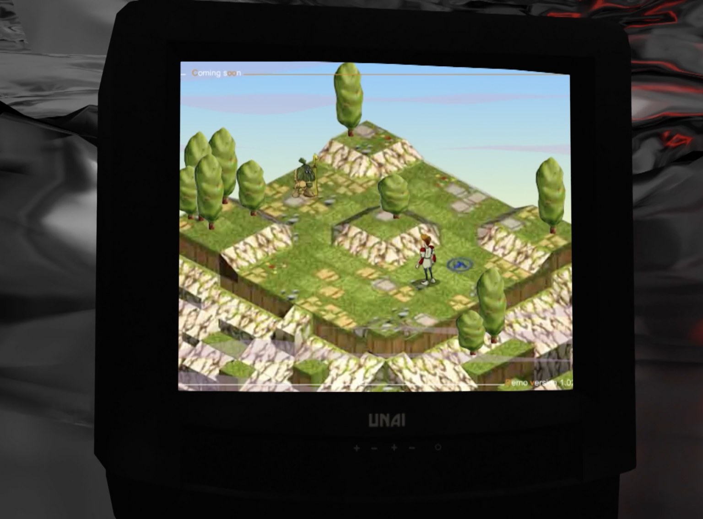
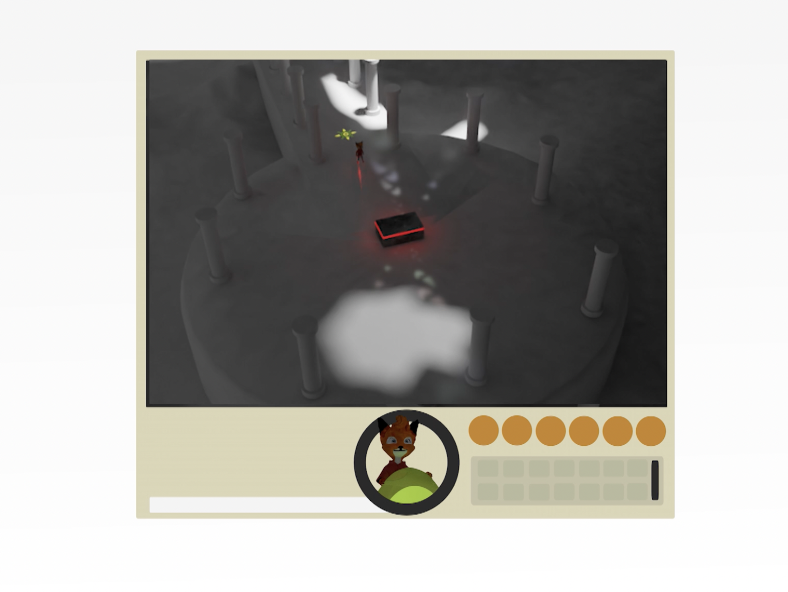
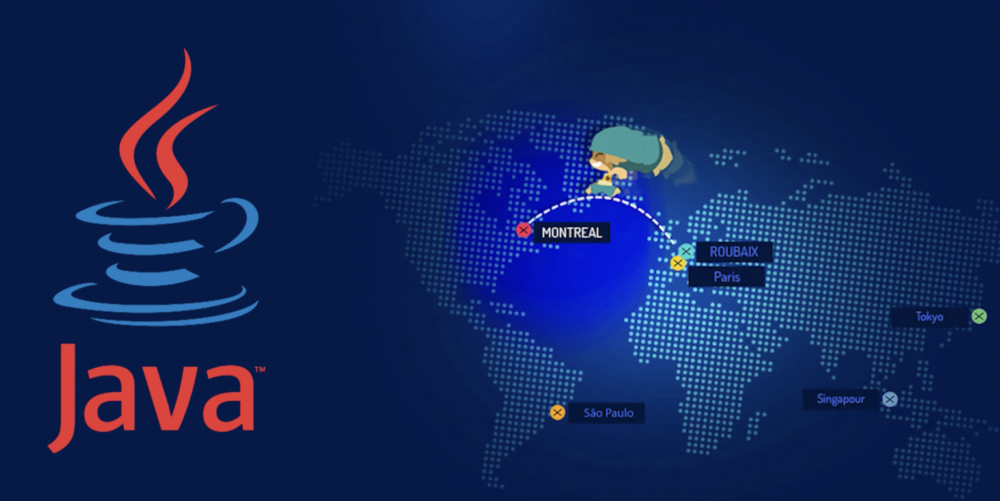
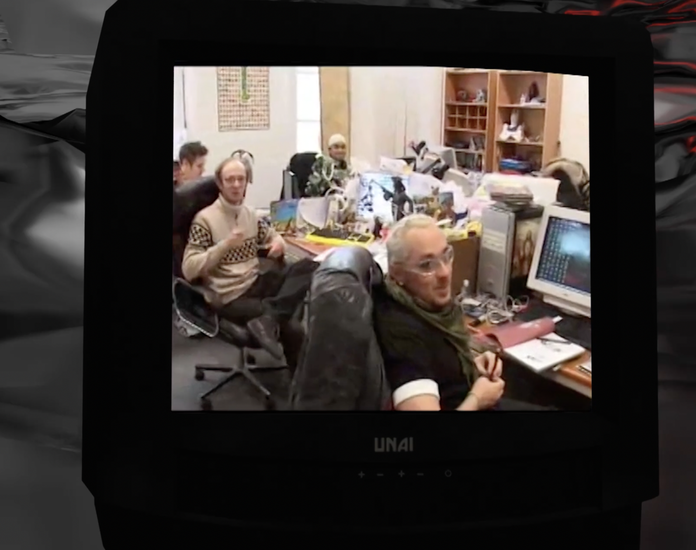
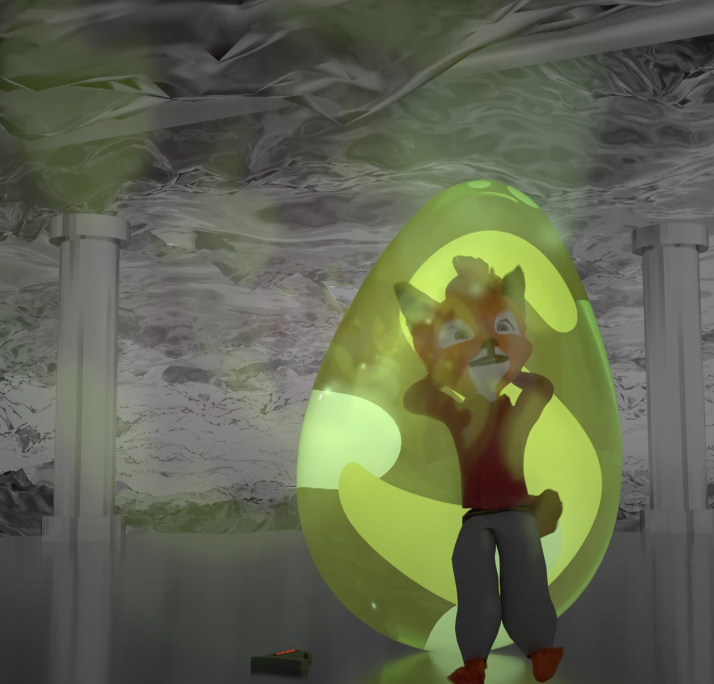

Ankama, ou l’héritage de Dofus contre l’ambition du Krosmoz

Avant-propos
Cet article est la version papier du script rédigé pour l’épisode 6 de UNAI, ma web-série et chronique du jeu vidéo et du multimédia. La version vidéo de cet article est disponible sur ma chaine Youtube.
UNAI #06 | L’Histoire d’Ankama, ou l’héritage de Dofus contre l’ambition du Krosmoz | CHRONIQUE
Bonne lecture.
Incipit
Nous sommes en 2001, lorsque Anthony ROUX, Camille CHAFER et Emmanuelle DARAS, anciens salariés de l’agence web iPuzzle, fondent une jeune compagnie à laquelle ils offriront leurs noms respectifs : Ankama.
La jeune équipe s’acharne à évoluer dans ce nouveau milieu qu’on appelle internet. Elle s’applique alors à créer des sites web pour des clients tels que La Redoute, mais aussi de maintenir des intranets d’entreprises ou bien de créer et gérer les systèmes d’informations de leurs clients.
Pourtant, dans l’esprit de ses fondateurs, Ankama n’est pas vouée à rester qu’une simple agence web. Non, secrètement, ils rêvent de faire de leur entreprise un studio de divertissement.
Une agence nommée Ankama web
Quand on regarde rétrospectivement les starts up nées dans les années 2000, on observe qu’une grande partie de ces entreprises ont survécu jusqu’à aujourd’hui mutant en agence web.
Pourtant, Ankama démarre à l’inverse en tant qu’Agence web et de prestation de service. Et dès le départ, entre des formations au graphisme, le webmastering, le conseil, le référencement, et bien sûr le jeu vidéo, l’entreprise joue sur de nombreux fronts.
L’un des savoir-faire de la société est Flash, une suite logiciel développée par la société Macromédia, qui sera d’ailleurs rachetée par Adobe plus tard.
La spécificité de ce logiciel est sa simplicité d’utilisation et surtout, son outil de dessin vectoriel. Le logiciel a été pensé comme un environnement de développement complet capable de créer des applications complexes et professionnelles à l’aide de son langage de prédilection : l’Actionscript.
Le logiciel possède deux principales fonctionnalités : son système de développement et son outil de création graphique.
Pour Anthony Roux, alias Tot, Flash est un allié de toujours. Un pilier qui restera durant un long moment l’un des socles technologiques de la société.
Et si on faisait un jeu vidéo ?
En 2001, la société peine à convaincre. Elle vivote grâce à son activité de prestation informatique aux entreprises et Emmanuel Darras cherche des fonds pour pouvoir faire survivre l’entreprise, lancée avec 3000 euros chacun.
Mais pendant ce temps, une idée folle germe dans la tête d’Antony et Camille, les deux autres fondateurs.
Flash, est un logiciel qui a la côte. En effet, le logiciel est un vrai phénomène au début des années 2000. Entre les portails de jeux flash qui battent tous les records et les hits créés avec cette technologie accessible paradent. On notera par exemple l’apparition des pionniers du jeu indépendant qui testent leurs idées de Game Design sur Flash ou des killer apps telles que Yetisports se partagent par un simple lien dans un mail.
Il faut dire que la technologie a ses avantages : multiplateforme, portative et surtout accessible depuis n’importe quel navigateur web sous condition d’avoir le module Flash Player installé sur son ordinateur.
Mais dans la tête de nos deux compères, flash peut être un moyen d’exprimer leur talent ailleurs que sur un site web vitrine. Non, ils entrevoient plus grand.
C’est ainsi qu’entre 2001 et mi 2002, la petite équipe travaille sur des ébauches de mini-jeux. Ils développeront d’abord des jeux de tank multi-joueurs ainsi qu’un premier jeu solo intitulé ArtySlot.
Sur le site d’Ankama, on peut lire dans la section Création de jeux vidéo on peut déjà entrevoir son univers si unique, l’humour potache et l’univers fabuleux y est présent. On y voit des poulets cracheurs de feux et des arbres indéracinables. Les prémices de l’univers connecté qu’ils s’apprêtent à créer, le Krosmoz, pointent le bout de leur nez.
Mais c’est en 2003 que l’équipe dévoilera le produit qui fera d’Ankama l’un des empires du divertissement français : le jeu vidéo massivement multi-joueurs, Dofus.
La créativité née de la contrainte
Le projet Dofus est passé par plusieurs étapes : au début il s’agissait au début d’un épisode de la série de jeux vidéo Artyslot, intitulé Duel. Ce dernier ne permettait que du combat au tour par tour, en joueur contre joueur.
 Première ébauche de Dofus: le jeu JcJ DuelMais c’est par la suite que le jeu s’est peu à peu complexifié pour devenir un mixte entre chat en ligne, à la blablaland-un autre jeu populaire de chat de l’époque- et un vrai jeu vidéo avec du challenge, des monstres et surtout un Lore.
Le terme MMORPG ne s’accorde pas au projet des débuts. Certes, l’objectif de la petite équipe est de développer un jeu communautaire, mais le jeu reste minuscule comparé au mastodonte qui sortira quelques semaines plus tard : World of Warcraft de Blizzard Entertainment.
Non, ce qui fait la particularité de Sortilej-l’un des noms donnés au projet, c’est d’aller à contre-courant des productions de l’époque. La mode est à la 3D, aux univers sérieux. Au médiéval fantastique.
Dofus sort du lot. Une fois connecté à son compte, le joueur débarque dans un univers parodique et unique en son genre. Le style graphique en 2D mélangeant cartoon et style animé japonais fait du jeu une perle de son époque.
Pourtant, comme on dit, la créativité née de la contrainte, de Dofus n’échappe pas à la règle. Les faibles débits de connexion de l’époque ainsi que les limites technologiques de Flash ne permettent pas de créer un monde grouillant de détails. Le jeu se joue à la souris et ne permet pas au début un déplacement rapide. Le jeu est rempli de bug car le moteur de jeu Flash est difficile à dompter.
Analyse d’un succès français
Et pourtant entre chat virtuel et jeux vidéo, Dofus est un succès incroyable. En 2007 c’est trois millions de joueurs qui ont visité les contrées d’Amakna.
Dofus se veut un MMORPG stratégique. Le gameplay est plutôt simple, puisque l’interface du jeu est découpée de manière à être accessible à la souris. Et malgré les limitations techniques et technologiques auxquelles l’équipe d’Ankama a dû faire face, le jeu est une merveille d’ergonomie.
 Schématisation sommaire de l’interface de Dofus 1.29L’écran de jeu est alors coupé en deux parties.
La première partie est l’interface utilisateur. On y retrouve le chat, un hub d’informations relatant le nombre de points de vie de son personnage et ses points d’expériences. Avec des menus pop-ups qui vont chacun enrichir l’expérience du joueur. Et à droite on a un panel contextuel qui va afficher les attaques pour les combats ou bien des émoticônes.
La seconde décrit le monde visité par le joueur. Entièrement dessiné et animé à la main. On y voit son avatar se déplacer dans le monde lui-même découpé en plusieurs sous carte.
Pour passer d’une carte a à l’autre, on doit faire bouger son personnage en cliquant à l’endroit où on souhaite qu’il se déplace. Ce dernier va alors marcher ou courir vers le lieu désiré. Dans le cas où le joueur veut changer de sous carte, ce dernier n’a qu’à se déplacer en cliquant sur un petit téléporteur en forme de soleil pour voir son personnage changer de sous-carte.
Et déjà, on perçoit au travers de cette fonctionnalité de déplacement du personnage les forces et les faiblesses du projet : cette méthode est un cache misère. Parce qu’à l’époque, il est difficile de faire une caméra mouvante qui suit le joueur dans l’environnement sous flash.
L’image perdrait alors de sa fluidité et le jeu serait moins accessible en fonction des configurations des PC des joueurs. C’est pourquoi l’équipe a choisi de garder l’environnement statique et de faire en sorte que le joueur se déplace dessus.
Pourtant, le jeu réussi à rendre le tout intuitif et organique. Dès le début du jeu, le joueur est confronté à un tutoriel permettant de mieux appréhender les caractéristiques du gameplay. Et chaque action semble naturelle.
Et ceci est l’une des nombreuses prouesses de la jeune équipe d’Ankama. Chaque partie du gameplay est en fait pensée pour composer avec les limites de son moteur : flash, mais aussi des limites du réseau naissant : Internet.
C’est pourquoi les combats du jeu seront non pas en temps réel, mais au tour par tour.
Les graphismes sont aussi impactés par les limitations graphiques des processeurs de l’époque. C’est pourquoi les environnements riches en détails seront des images bitmap, quand les éléments animés comme les personnages seront réalisés en vectoriels à l’aide d’une direction artistique issue de la culture manga japonaise et de la bande dessinée franco-belge ! Tout est pensé pour optimiser l’espace de stockage tout comme l’espace de votre processeur.
Et c’est là qu’on voit l’un si ce n’est le talent créatif d’Ankama : jouer avec les limites. Aller au-delà de ce qui est possible avec ce qu’ils tiennent entre leurs mains et défier le monde du divertissement avec quelques morceaux de ficelles.
Au-delà de Dofus : le transmédia
Mais Ankama ne veut pas s’arrêter là. C’est en 2005 que Ankama commence à travailler sur son deuxième titre Dofus Arena, mais aussi sa filiale Ankama Editions qui s’occupera dans un premier temps de l’édition des Art books et beaux livres présentant les making-of du jeu. Et bien sûr, du phénomène du manfra Dofus scénarisé par Tot et illustré par Ancestral Z.
Le transmedia est une stratégie de narration multimédia et multisupport. L’idée est la suivante : on déploie un univers sur différents supports : jeux vidéo, bande dessinée, animation, livres… Dans le but d’approfondir l’univers tout en multipliant les sources de revenus.
Cette stratégie peut être utilisée à plusieurs fins :
- Tout d’abord, l’idée est de créer de nouveaux canaux d’entrée au produit principal. Des jeunes gens peuvent découvrir la bande dessinée, qui va les inciter à découvrir le jeu. Voyez cela comme une publicité qui vous raconte une histoire, et qui fait partie de l’expérience.
- Ensuite, cela permet de diversifier, et structurer l’entreprise. La jeune agence web mute en groupe et va chercher de nouveaux relais de croissance pour sauvegarder son indépendance.
- Enfin, à l’échelle humaine, cela permet de proposer à ses équipes de nouvelles expériences professionnelles tout en restant au sein de la boite. Cette méthode permet alors des bols d’air frais créatifs, aux animateurs notamment.
Le transmédia est donc plus qu’un argument marketing, c’est un esprit d’entreprise. C’est à ce moment qu’on va voir émerger de nouveaux projets ambitieux qui vont à la fois souligner l’innovation au sein de l’entreprise, mais aussi démontrer ses limites.
Un studio d’animation va alors voir le jour, avec la mise en place d’un pipeline autour du logiciel flash. On verra également la création de nombreuses filiales, dédiées à l’internationalisation de la stratégie transmédia de l’entreprise.
Ankama va alors grossir et devenir plus qu’un studio de jeux vidéo. Ils lancent ainsi un portail vidéo en 2006 sur lequels les fans vont pouvoir regarder les bandes annonces des futurs projets de l’entreprise, mais aussi des émissions produites en interne en partenariat avec la chaine Nolife et le site Gameblog.fr sur lesquelles Ankama devient actionnaire.
Ankama va également structurer sa maison d’édition, faire grandir des labels de musiques, construire un pôle évènement, faire des films d’animations stop-motion, lancer des jeux indépendants, construire une crèche dans son quartier… Le tout en racontant des histoires au-delà de nos frontières.
Parce que pour Tot, la prochaine étape pour l’entreprise est l’internationalisation de ses créations. Dofus reste un succès sur le territoire français, mais aussi en Amérique du Sud. Mais à l’époque, comme aujourd’hui, la grosse part du gâteau se trouve en Amérique du Nord, et plus particulièrement aux Etats-Unis.
Le rêve Américain d’Ankama doit donc prendre une nouvelle forme. Il doit se matérialiser sous la forme de l’un des projets transmédias les plus ambitieux de la décennie. Et ce projet a pour nom « Wakfu ».
L’ère du Wakfu
Wakfu est un jeu se déroulant 3000 ans après l’histoire contée dans son jeu précédent. Et c’est plus qu’un Dofus 2.
Le projet propose cinq grands axes à ses débuts :
- Un jeu vidéo massivement multijoueur sur internet qui se veut le successeur et suite de Dofus.
- Une série d’animation composée de deux saisons de 26 épisodes, deux épisodes spéciaux réalisés au japon, trois OAV, et une troisième saison de treize épisodes.
- Un jeu de carte Wakfu à jouer et à collectionner
- Un ambitieux plans de publication avec l’édition de bandes dessinées originales dont les séries Wakfu Heroes, Wakfu les larmes de sang, une série de bande dessinée ainsi qu’une série de mangas
- La mise en place de produits dérivés, de jouets et de goodies via sa filiale Ankama Products et des partenariats notamment avec BANDAI.
Toutes les activités du groupe Ankama sont mises à contribution, dont la filiale Ankama Press. On a alors la création de magazines dédiés à la jeunesse avec Mini Wakfu Mag, mais aussi Wakfu Mag à partir de 2012.
En parallèle du développement du MMO Wakfu, qui ne sortira qu’en 2012, Ankama propose un palliatif appelé Wakfu : les Gardiens.
Un jeu vidéo multijoueur en ligne, reprenant les éléments de gameplay de Dofus en version simplifiée et jouable directement sur navigateur web à l’aide Flash Player et qui se veut une initiation aux jeux multi-joueurs. Enfin, ce sont aussi quelques jeux vidéo jouables en solo, avec Islands of Wakfu, et bientôt One more gate : A Wakfu Legend.
Ankama va aussi s’associer temporairement à Square Enix pour publier Wakfu en Amérique du Nord. Et plus tard, ils vont aussi s’entourer de la société Gumi pour le jeu mobile Wakfu : Raiders.
Wakfu, c’est donc plus qu’une simple remise à niveau ou qu’une extension de Dofus. C’est le projet le plus ambitieux porté par Ankama. Et chacun des produits qui font partie de cet univers vont porter des défis techniques, et artistiques.
Wakfu, le MMORPG
Côté jeux vidéo massivement multijoueur avec son MMO, Ankama abandonne le moteur de jeux Flash pour un moteur de jeu entièrement basé sur une tout autre technologie : JAVA.
L’idée est de se défaire des contraintes technologiques de Flash pour proposer un Dofus taillé pour l’international.
L’idée de Wakfu était de proposer un Dofus plus accessible, plus populaire. Et proposer une dimension transmédia pour le projet va dans ce sens. Et pourtant, le jeu gagne en complexité.
Avec un système d’environnement dynamique dans lequel les joueurs ont l’opportunité de tout détruire et un ambitieux gameplay qui allie écologie et politique, Wakfu vient s’inscrire dans une ambition de démesure qu’est l’univers connecté d’Ankama : le Krosmoz.
L’héritage de Dofus
Ankama a tenté et tente encore aujourd’hui de nouvelles choses. Mais beaucoup de leurs tentatives de se détacher du pilier de leur Success Story Dofus se sont soldées par des échecs.
La stratégie Ankama pourrait être perçue comme une prise de risque créative permanente. Il y a néanmoins des éléments qui trahissent la volonté d’Ankama de ne pas sortir des sentiers battus par son premier succès.
Et à mon sens, cela se traduit par deux éléments récurrents dans l’ensemble de son œuvre.
La ludographie d’Ankama
Au niveau de la ludographie, on remarque que la quasi-totalité des productions de la société se veulent être des successeurs spirituels de Dofus. On y recroise un tour par tour stratégique inspiré de Final Fantasy Tactics, avec une grille posée sur un environnement dans lequel le joueur doit battre ses adversaires. Néanmoins, Ankama semble comme réinventer la recette de son tour par tour à chacun de ses jeux.
Par exemple, le système de jeu de Dofus, bien qu’il soit en tour par tour sur une grille, n’a absolument rien en commun avec le gameplay de Krosmaga, qui pour le coup, empêche le joueur de reculer ou de fuir son adversaire.
Ici, l’entreprise mise sur des forks de son succès. L’idée est de reprendre à chaque fois les éléments qui ont fait le succès de son Dofus, et de les ajuster pour agripper un nouveau public. Mais attention, quand je parle de forks, ce n’est pas juste prendre le code de Dofus et le copier-coller. Non, ici, c’est reconstruire un projet de zéro, parfois sur une autre technologie de développement de jeu, et lui appliquer de nouvelles idées de gameplay.
Et pour moi, c’est ici encore qu’on perçoit toute la vision d’ankama : on a une succession de jeux, qui adaptent chacun à leur manière le gameplay Ankama, la philosophie de l’univers du Krozmoz. Chaque jeu n’est finalement qu’un module, qu’un monde parmi tant d’autres. Et ce côté modulaire est précisément lisible dans le projet d’Ankama Launcher. Un exécutable, dans lequel on peut accéder à l’ensemble des univers de la firme.
On peut alors basculer d’une époque à l’autre, basculer d’un gameplay à l’autre, d’une vision à l’autre d’un même univers.
Mais le gameplay tour par tour n’est pas la seule obsession d’Ankama.
Le Shonen parodique
Au niveau de la narration, il y a un domaine dans lequel Ankama excelle depuis des années. Ce domaine, c’est le Shonen parodique.
Au cours de son existence, Ankama a lancé de nombreux projets et sa ligne éditoriale, même si elle reste ouverte à des propositions fortes d’auteurs, elle a longtemps été rythmée par le Shonen.
Le Shonen est un genre de manga qui vise le jeune public masculin. On y retrouve des archétypes de la narration comme le héros au mille et un visages, qui va vivre des aventures incroyables dans un univers fabuleux. L’idée est d’y découvrir un personnage grandir. D’y voir l’ascension d’un jeune garçon qui au travers de ses rencontres, va changer le monde.
Et l’un des Shonen les plus emblématique est bien sur Dragon Ball, une quête initiatique qui comporte une dimension parodique, et humoristique.
Ankama reflète cet esprit shonen, et devient même le miroir de la génération club Dorothée.
Et il est récurrent de voir des personnages du Krozmoz qui revêtent cette tradition. On peut notamment citer les personnages de Yugo, de la série Wakfu, de Joris du film Dofus, d’Arty dans le manga Dofus ou bien Pym dans le manga Dofus Arena.
A mon sens, ces différents éléments qui étaient autre fois la marque de fabrique d’Ankama, sont devenus sa limite. Et quand je découvre les nouveaux projets portés par l’entreprise, comme Princesse Dragon ou La dernière aventure du conte Lance-dur, il me semble évident que les équipes ont envies d’aller vers autre chose.
Et l’œuvre qui catalyse l’ensemble de cette remise en question est la troisième saison de la série Wakfu.
Le paragraphe suivant contient des spoilers et peut vous divulgâcher le contenu de l’œuvre, mais contient également une surabondance du « je » et l’usage intensif de la première personne du singulier.
L’écho d’une œuvre vient toujours d’un artiste
Dans la saison 3 de Wakfu, on découvre le personnage d’Oropo, le nouvel antagoniste de la Confrérie du Tofu.
Ce personnage est atypique, puisqu’il est né à un moment fort des OAV qui précèdent la saison.
Yugo, en s’appropriant les six Dofus éliatropes, donne naissance malgré lui à des copies de lui-même, qui sont balancées au travers de l’espace et du temps. Ces copies sont appelées les éliotropes. Ils ont le vécu de Yugo, et renferment une copie de son passé.
Ce personnage est intéressant, d’abord parce qu’il est une tragédie à lui seul. Car étant le dernier des éliotropes, il a absorbé à son tour la mémoire de ses semblables, et donc leur tristesse, leur haine et leur rancœur. Et là j’ai trois différentes interprétations au personnage, qui sont à la fois mon ressentiment personnel, mais aussi le fruit de mes réflexions.
Grandir dans un autre univers
La première interprétation est simple : les éliotropes sont les enfants qui regardent Wakfu. Si vous avez mon âge, vous avez probablement joué à Dofus durant votre enfance, gagner des points d’expériences sur les craqueleurs, mais surtout, vous avez peut-être regardé Wakfu sur une chaine nationale.
En regardant cette série, c’était comme un rendez-vous régulier avec les personnages d’Ankama. On découvrait l’épisode du samedi matin, puis on allait découvrir la mise à jour dans Dofus et dans Wakfu : les gardiens.
Après avoir vécu les aventures de Yugo, on a découvert un nouveau sens au mot immersion qui ne signifiait plus juste motion gaming ou jeu mobile, mais aussi transmédia.
Personnellement j’ai grandi avec ces personnages, et puis après j’ai découvert d’autres jeux, d’autres séries. J’ai évolué, et j’ai changé. Alors que le monde mutait autour de moi, je commençais à regarder mon enfance avec nostalgie. Et en regardant la saison 3 de Wakfu en 2017, rien n’était plus pareil.
A sa sortie, j’ai détesté cette nouvelle aventure. J’étais déçu du changement opéré sur les personnages, de leur caractère qui n’était plus le même.
Et puis après un visionnage récent, j’ai compris Oropo. Ce personnage représente plus qu’un spectateur frustré du changement, il représente la folie de la nostalgie. A l’écouter, la vie sur laquelle il a eu un impact ne vaut rien comparé au passé de son géniteur. Ce vécu qui n’est pas le sien l’a enfermé dans une haine irraisonnée. Et pourtant, lui et les éliotropes ont préféré ne pas interférer, et changer le cours de l’histoire avec un seul objectif : laisser leur père vivre les deux premières saisons. Et donc sauver ce vécu fantasmé.
On ne fera jamais mieux, ou la phobie de l’artiste
Yugo, comme les équipes d’Ankama, ont provoqué le destin. Ce sont eux qui ont provoqué par leurs actions ou leur inactions leur ascension, et leurs échecs. Et ces deux entités se sont bridées dans une boucle basée sur un passé fantasmé, et impossible à revivre. Cette sensation de se trouver face à une copie perpétuelle du jeu Dofus, qui malgré sa volonté de s’en détacher est toujours rattrapé par son héritage.
Un créateur en inspire toujours un autre
Et si Yugo était la représentation d’Ankama. Un OVNI qui construit des choses fabuleuses, et qui pour trouver sa place va devoir faire face à sa nature profonde. Mais si Ankama est Yugo, pour moi, Oropo représente aussi les créateurs que son équipe a inspirés. Après tout, l’aventure du Krosmoz est originale dans toute l’industrie. C’est cette force de proposition qui m’a poussé à rêver, et à penser que, peut-être, un jour, j’aurais moi aussi l’occasion de donner vie à des univers. Des univers dans lesquels évoluerons des passionnés et qui à leur tour lanceront les leurs.
 Les auteurs et illustrateurs chez Ankama EditionsSi on y réfléchit bien, l’artiste peut être perçu comme atypique dans le monde dans lequel il évolue. Mais l’artiste devient un dieu quand il construit son univers. Il y choisi les règles dans lesquels évolue ses protagonistes, et y choisi chacun des impacts de ces derniers. La question est donc la suivante : qui est le protagoniste dans un MMORPG ?
Finalement, qui de Yugo ou Oropo est le créateur ?
L’avenir d’Ankama
Après la fermeture consécutive de Dofus Arena, Wakfu : Les Gardiens, ou l’abandon de Slage, on est en droit de se demander à quel point Ankama en tant que société, est aujourd’hui dépendante de la marque Dofus.
Cela fait maintenant plus de 15 ans que les détracteurs du Krosmoz prédisent la fin de l’aventure. Que l’entreprise est trop dépendante de son univers fétiche. Que la santé de l’entreprise va au gré du nombre d’abonnements et donc de la rétention au jeu. Parce que l’univers du Krosmoz n’a jamais surpassé la marque Dofus.
Pourtant, Ankama est toujours debout. Et fait partie intégrante de l’imaginaire collectif des joueurs français.
Pour moi, Ankama a redistribué les cartes dans le monde du divertissement. C’est la première entreprise française qui a voué son activité à la création d’univers populaires, proposant des idées fortes avec des valeurs écologiques, et a initié toute une génération aux jeux de stratégie.
Dofus n’a pas été seulement un vecteur de rencontres, il a été bien plus qu’un simple réseau social. Il est un univers riche et une communauté où chaque joueur a l’opportunité d’avoir sa place. Où derrière chaque personnage non joueur se cache une blague et un humour ravageur.
Il y a quelques années, Ankama a annoncé la volonté de créer Ankama Launcher, son centre transmédia dans lequel les joueurs pourront voir sur une seule interface toutes ses productions, et qui rassemblera chaque BD, chaque jeu, chaque dessin-animé de l’univers du Krosmoz.
Maintenant, reste à savoir si ce player se découvrira sous le prisme du Krosmoz, ou de Dofus.
Les marques citées appartiennent à leurs propriétaires respectifs.